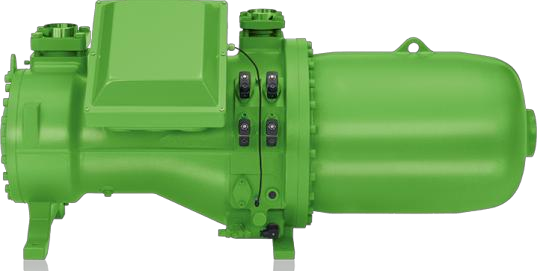
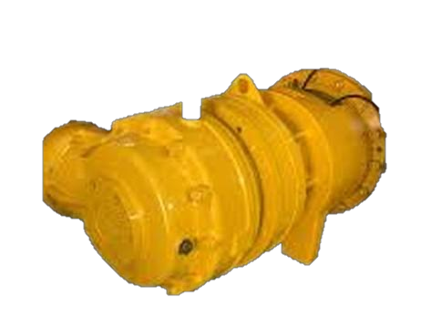
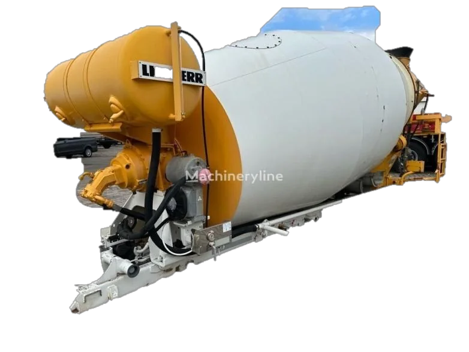
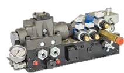
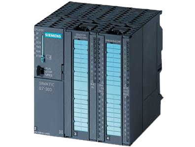
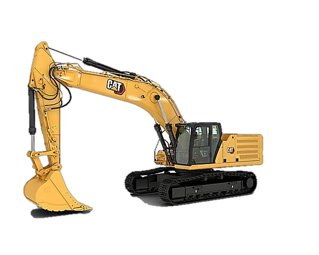
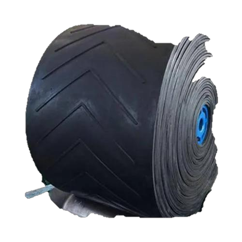

01
Cooling & HVAC Parts
Filters, compressors, fans, sensors, control boards and valves.
Spare parts
Browse major component groups or send the equipment model, serial number, part number, photo or drawing for technical review.
Parts categories
Category-level browsing keeps the process simple. Exact availability and compatibility are confirmed through an enquiry.

Filters, compressors, fans, sensors, control boards and valves.

Gearboxes, cylinders, valves, mixer arms, blades, tiles, rollers, belts and silo parts.

Chutes, hydraulic motors and pumps, reduction gearboxes, drum rollers and bearings.

Transmission, differential, engine, suspension, filter and pneumatic components.

Pumps, motors, valves, cylinders, manifolds and related control components.

Sensors, control boards, switches, motors and electrical control components.

Component sourcing for cranes, loaders, excavators and construction machinery.

Can't identify the part?
Provide as much technical context as possible. A nameplate, drawing or clear component photo can be more useful than a general description.